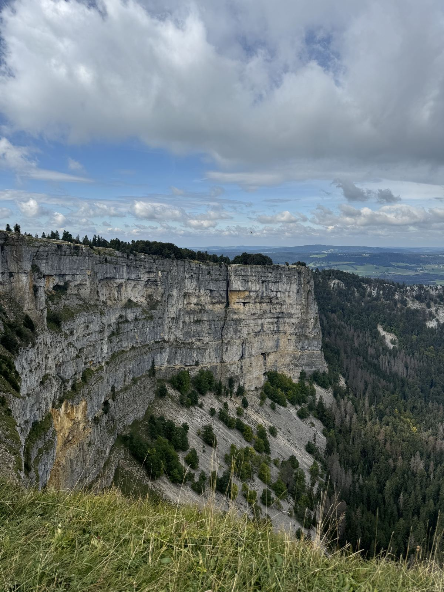
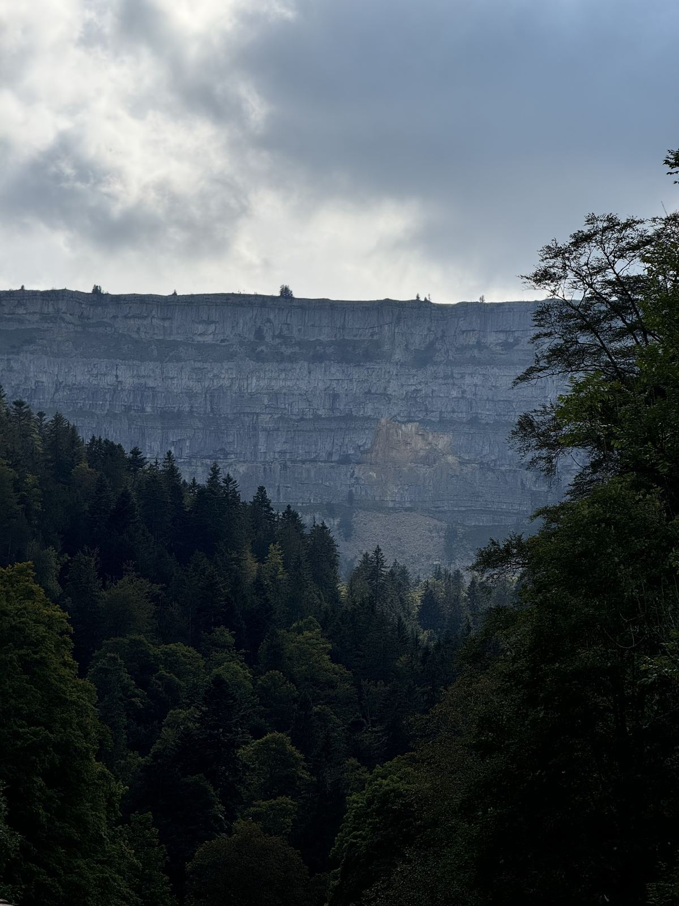
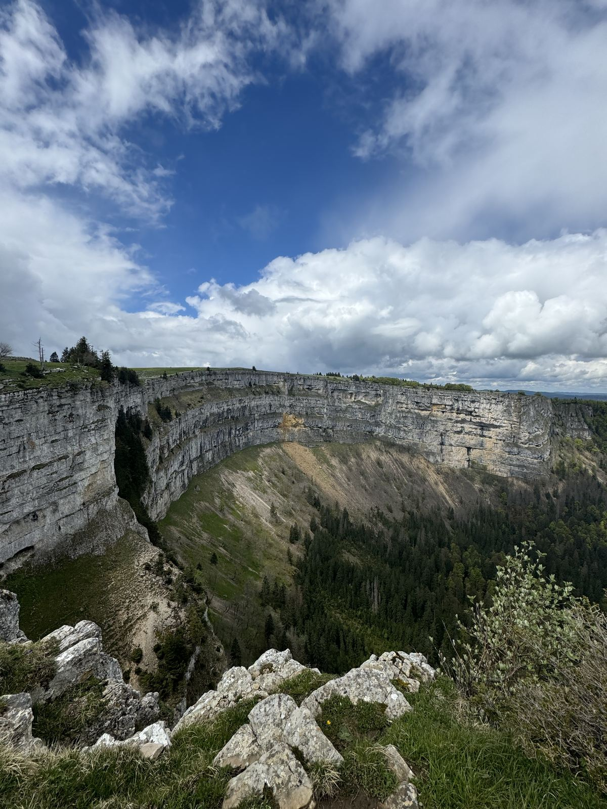
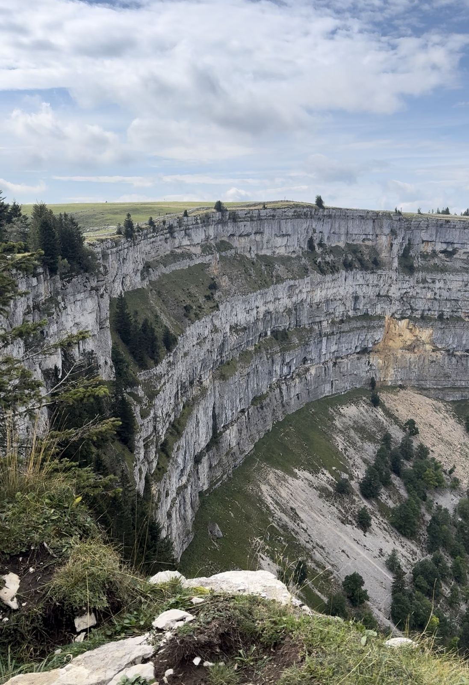
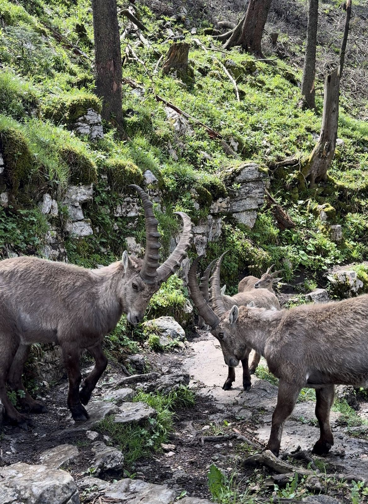

Un anfiteatro de roca de más de 150 metros de alto en el Jura suizo. Aquí tienes lo esencial para caminarlo con seguridad: transporte, recorrido, mejor época y reglas de la reserva.

El Creux du Van es un anfiteatro natural en el cantón de Neuchâtel, muchas veces llamado el "Gran Cañón suizo". Tiene cerca de 1.400 metros de ancho y paredes de más de 150 metros de altura. Es reserva natural, y en sus repisas vive una colonia de íbices (cabras montesas) que se reintrodujo en los años sesenta.
Es una de las caminatas de un día más espectaculares del Jura, y se llega bien en transporte público.
Datos del recorrido circular clásico desde la estación de Noiraigue. Varían un poco según la variante que elijas.
La caminata clásica sale de la estación de Noiraigue, a unos 725 m de altitud. Hay trenes cada hora desde Neuchâtel y el trayecto dura alrededor de 20 minutos. Si vienes desde Biel/Bienne, el recorrido pasa por Neuchâtel. Revisa siempre los horarios actualizados en SBB, y confirma el último tren de regreso antes de salir.
Hay parqueaderos oficiales, y fuera de ellos está prohibido parquear dentro de la reserva (tampoco se puede acampar):
Fuente: Tourisme neuchâtelois, acceso y parqueaderos. Revisa ahí las condiciones antes de ir.
Es el recorrido más completo y el que mejor se organiza en transporte público. Está bien señalizado.
Tiempos de referencia de caminata continua. Con pausas, almuerzo y fotos cuenta de 4 a 6 horas en total.




Basado en el reglamento de las reservas naturales neuchâteloises. Las normas pueden cambiar, así que revisa la información oficial antes de ir.
El circuito clásico desde Noiraigue son unos 12 km y se hace en 4 a 6 horas, según el ritmo y las pausas.
Sí. Hay trenes a Noiraigue desde Neuchâtel, y de ahí sale la ruta a pie. Confirma los horarios, sobre todo el último tren de regreso.
Sí, con las condiciones adecuadas y equipo (crampones de senderismo si hay nieve). Los caminos pueden ser peligrosos, así que consulta las condiciones antes de ir.
Sí, pero siempre con correa, y con mucho cuidado: el borde del circo no tiene barandas.
La ruta en sí es de dificultad moderada, pero el borde está sin protección. Quien tenga vértigo debe evitar el sendero exterior, y con niños hay que mantenerlos de la mano cerca del borde.
No necesitas experiencia técnica, pero sí una condición física básica: son unos 800 metros de subida acumulada en un día.
Organizo esta ruta con grupos pequeños: planificación, orientación y toda la información en tu idioma, para que solo te dediques a disfrutarla.
por persona · guía incluido · mínimo 2 personas
Grupos de 7 o más: CHF 110 por persona · máximo 10 personas
Escríbeme directamente y te respondo, sin formularios. También puedo armar una fecha para tu grupo.
Escribir por WhatsApp → Preguntas frecuentes